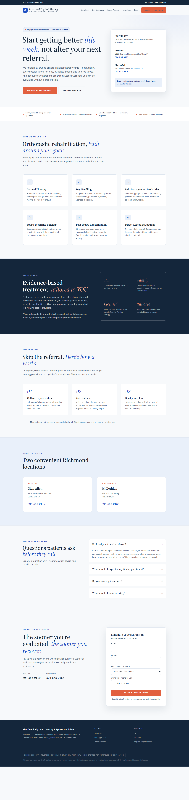

A homepage concept for a fictional family-owned physical therapy clinic, demonstrating the same content-first conversion approach outside legal — and how one under-used fact can restructure an entire page.
Riverbend Physical Therapy & Sports Medicine (fictional): a family-owned clinic with two Richmond-area locations, competing against corporate chains. Its therapists are Direct Access Certified — meaning patients can start treatment without a physician referral. On most clinic sites, that fact appears once, mid-page, in body text.
The challenge given to the design: rebuild the page around that single patient-acquisition message, make "independent, not a chain" tangible rather than sentimental, and keep every scroll depth one click from an appointment.

The full homepage concept: Direct Access as the headline promise, a "start today" card with both locations, and an appointment path repeated at every scroll depth.
"No referral needed" is the hero chip, the headline ("Start getting better this week, not after your next referral"), a three-step explainer, and the first FAQ. One fact, four reinforcements.
"Family owned" is an abstraction until you explain what it buys the patient: one-on-one sessions and treatment decisions made by the therapist, not a corporate productivity target. The approach section says exactly that.
Both locations with phone numbers appear in the topbar, the hero card, a dedicated section, and the form's location selector — so no patient ever hunts for the number to call.
Healthcare design earns trust through clarity: a soft porcelain ground, one confident blue, serif headlines for warmth, and generous whitespace. No stock-photo heroes, no text fighting a busy background.